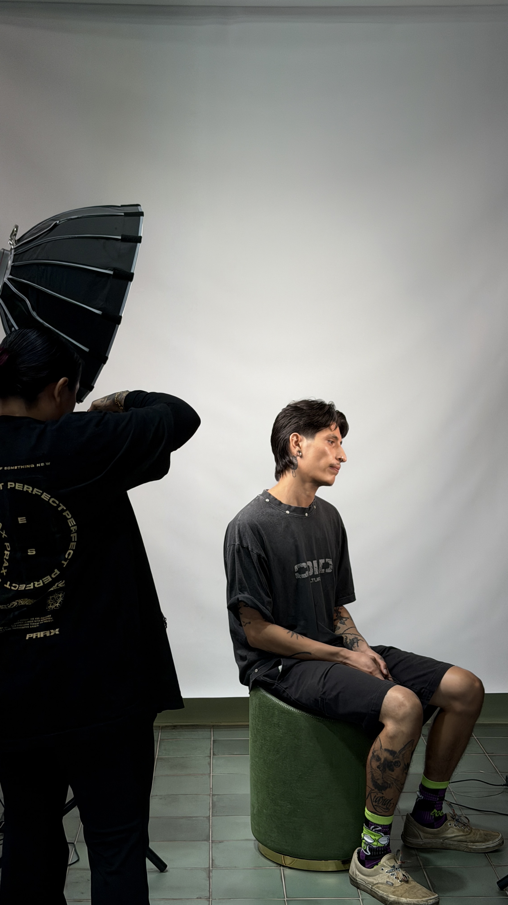

Mai is the kind of barber you feel at ease with the moment you sit down. With years of experience behind the chair, she brings a quiet confidence and genuine warmth that puts clients at ease from the first conversation. She's not loud about it, but the care comes through in everything she does.
Her approach starts with listening. She reads the room, picks up on what a client is going for even when they're still figuring it out, and adjusts her recommendations in real time. For her, it's not just about the hair. It's about the full experience that brings it all together, and making sure every client leaves feeling ready to take on their day.
Technically, Mai is ready for whatever walks through the door. She's versatile across styles and lengths, comfortable with the fundamentals and equally capable when a client wants to try something new. What ties it all together is her attention to detail and a genuine investment in making sure the finished cut is exactly what the client was looking for, whether they knew how to ask for it or not.
Outside of barbering, Mai enjoys spending time with her family, watching tv and movies, boxing, playing video games and taking her dogs outdoors.
